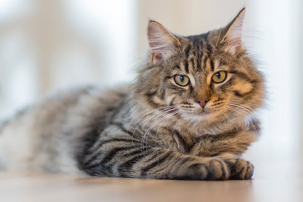

La vida de Minino el Gato
Minino, el peculiar felino de Cabudare, nació en el año 2015 y desde el principio demostró tener una personalidad única que cautivó el corazón de todos. Su dueña, Gabi, fue la encargada de proporcionarle un hogar lleno de amor y comodidades.

Desde temprana edad, Minino desarrolló un amor desmedido por la comida. Su apetito voraz y su habilidad para convencer a Gabi de compartir sus bocadillos se convirtieron en rasgos distintivos de su carácter La cocina era su reino, y Minino no dudaba en reclamar su territorio, demostrando una pose posesiva y encantadora alrededor de sus platos favoritos. La vida de Minino dio un giro inesperado cuando, guiado por un instinto curioso y un deseo insaciable de aventuras, decidió mudarse a la casa de Gabi. Allí, encontró un nuevo territorio para conquistar y, sorprendentemente, descubrió su inusual interés por la política venezolana.

Este gato astuto y carismático comenzó a organizar "mítines" felinos en la sala de estar, expresando sus opiniones sobre cómo mejorar la calidad de vida de sus congéneres y, por ende, de todo el país. Minino soñaba con ser el presidente de Venezuela, liderando una revolución felina hacia un futuro mejor. Que descanses en paz, Minino, el gato comilón y posesivo con grandes aspiraciones políticas que dejó una huella indeleble en la vida de Gabi.